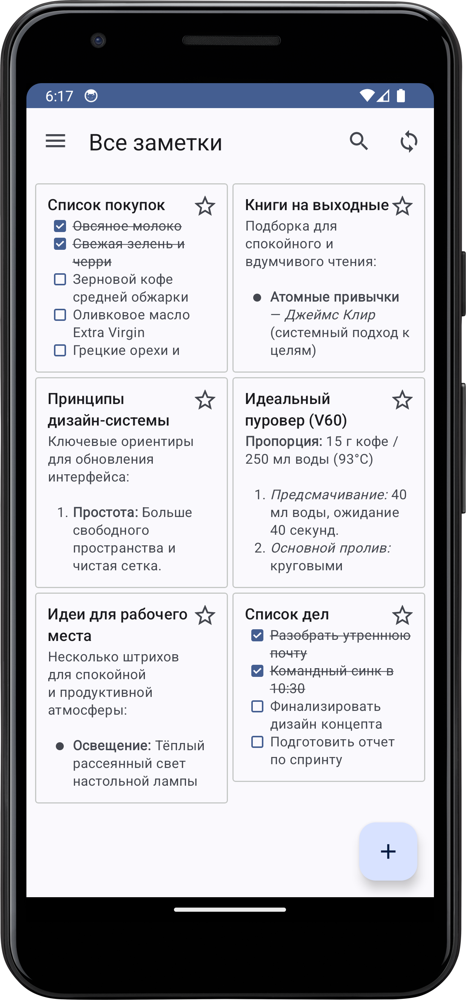
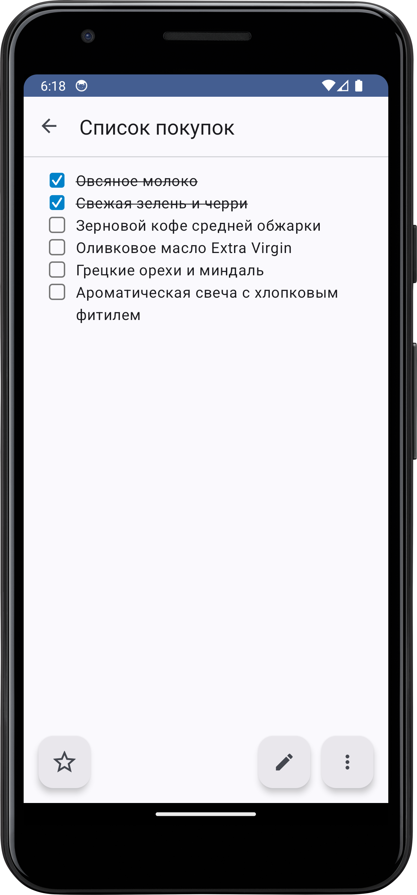
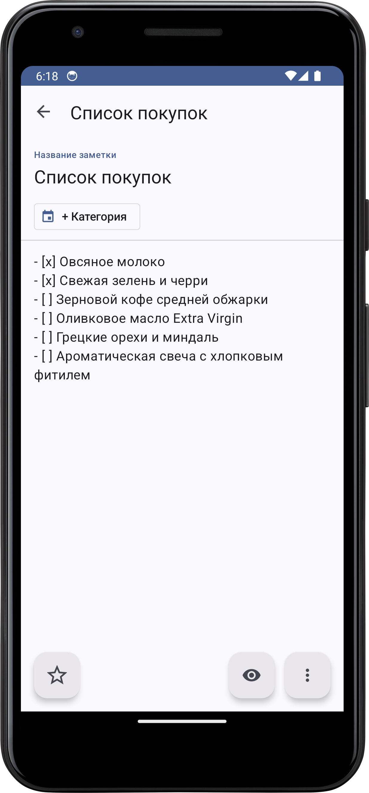
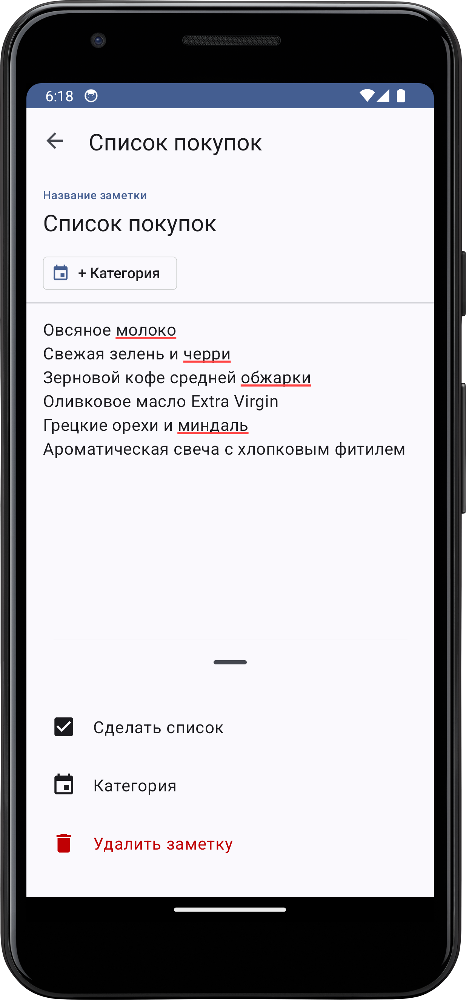
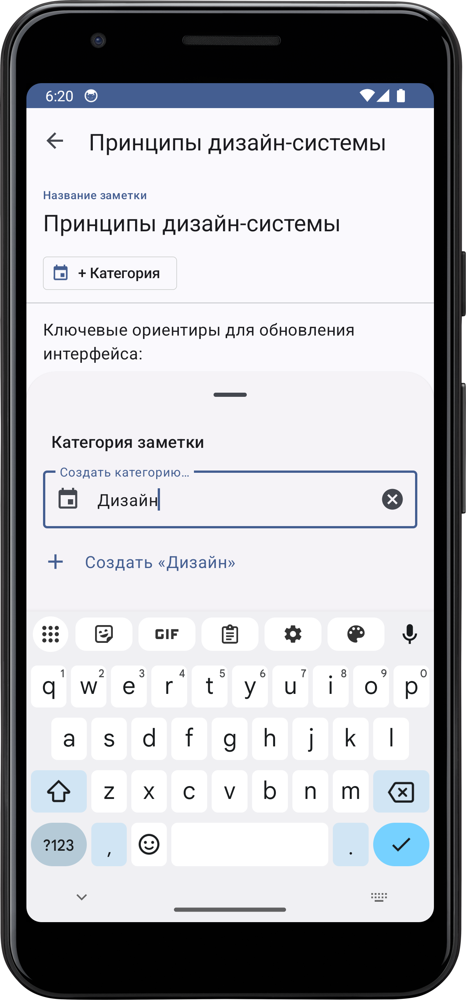
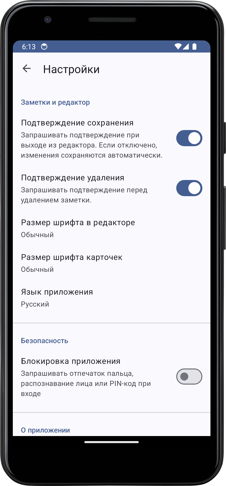

Клиент Nextcloud Notes с интерфейсом в стиле Google Keep
Мгновенная работа с заметками, интерактивные чек-листы, надёжный Offline-First и двусторонняя синхронизация с вашим облаком Nextcloud.

Всё необходимое для ваших заметок
Создано с упором на приватность данных, скорость работы и удобство интерфейса
Интерфейс Google Keep
Адаптивная сетка карточек (Staggered Grid), поддержка Material Design 3, динамические цвета и светлая/тёмная темы.
Полноценный Offline-First
Локальная база данных Room выступает единым источником правды. Мгновенное сохранение и доступ к заметкам без ожидания сети.
Двусторонняя синхронизация
Автоматическая синхронизация с сервером по etag и временным меткам с визуальной индикацией прогресса и статуса.
Markdown и чек-листы
Крупные чекбоксы с зачёркиванием, умный переход на новую строку по Enter и быстрая конвертация текста в чек-лист.
Биометрическая защита
Защитите личные записи: надёжная блокировка приложения по отпечатку пальца, скану лица или системному PIN-коду устройства.
Бесшовный вход (Flow v2)
Вход в 1 клик через браузер: не нужно вручную копировать URL сервера и генерировать сложные пароли приложений.
100% Приватность и FOSS
Никаких Google Play Services, встроенной рекламы, телеметрии и аналитики. Ваши заметки принадлежат только вам.
Персонализация шрифтов
Независимый выбор масштаба шрифтов для карточек и редактора, удобная смена языка интерфейса и навигация по категориям.
Продуманный до мелочей дизайн
Ознакомьтесь со скриншотами реальной работы приложения
Главный экран заметок
Адаптивная сетка карточек с интерактивными чекбоксами и быстрым поиском.

Просмотр чек-листа
Удобное вычёркивание задач в один тап прямо с экрана просмотра.

Редактор списков
Умное автодополнение пунктов по Enter и поддержка Markdown.

Конвертация в список
Превращение обычного текста в интерактивный чек-лист в один клик.

Управление категориями
Быстрая сортировка заметок по проектам, темам и тегам.

Гибкие настройки
Выбор темы оформления, настройка размера шрифта и биометрический замок.
Как начать пользоваться за 3 шага
Простая настройка без сложных инструкций
Включите Notes в Nextcloud
В веб-интерфейсе вашего сервера Nextcloud перейдите в «Приложения» и включите официальное приложение «Notes».
Установите KeepNotes
Скачайте актуальный APK-файл со страницы релизов GitHub (релиз в каталоге F-Droid готовится к публикации).
Войдите в 1 клик
Откройте приложение, введите адрес вашего облака и подтвердите авторизацию в браузере через Nextcloud Login Flow v2.
Ваши данные под вашим полным контролем
Прямая защищённая связь между смартфоном и вашим сервером без посредников
Прямое соединение
Приложение связывается напрямую только с указанным вами доменом Nextcloud по шифрованному протоколу HTTPS. Серверов-посредников не существует в принципе.
Без трекеров и аналитики
Никаких Firebase, Google Analytics, Sentry или Facebook SDK. Ни один байт телеметрии не покидает ваше устройство.
Локальный сейф
Чувствительные учетные данные хранятся в защищённом хранилище Android EncryptedSharedPreferences и закрыты биометрией.
Часто задаваемые вопросы
Ответы на популярные вопросы о работе приложения и безопасности
Нет! KeepNotes спроектирован по парадигме Offline-First. Локальная база Room является единым источником правды. Вы можете читать, создавать и редактировать любые заметки без подключения к сети. Как только появится интернет, приложение автоматически выполнит быструю двустороннюю синхронизацию.
Да. Приложение полностью поддерживает динамическую тему Material 3: вы можете выбрать автоматическую смену по системной теме Android или принудительно зафиксировать светлый или глубокий тёмный режим.
Категорически нет. У разработчиков приложения нет серверов для сбора данных. Приложение общается исключительно между вашим устройством и вашим сервером Nextcloud. Используется современный протокол Login Flow v2, при котором приложению передаётся только уникальный защищённый токен сессии.
Да, абсолютно. В KeepNotes нет ни одной проприетарной библиотеки Google. Приложение распространяется в виде прямых APK-файлов на GitHub Releases, а также готовится к публикации в каталоге свободного ПО F-Droid. Оно отлично работает на дегуглифицированных прошивках (LineageOS, GrapheneOS, /e/OS и др.).
KeepNotes поддерживает Android версии 8.0 (Oreo) и новее, включая актуальные версии Android 14 и Android 15, сохраняя высокую скорость работы даже на бюджетных устройствах.
В веб-интерфейсе Nextcloud администратору достаточно перейти в раздел «Приложения» (Apps), найти в каталоге официальное приложение «Notes» и нажать кнопку «Установить и включить». Никаких дополнительных настроек не требуется.
Готовы навести порядок в заметках?
Скачайте KeepNotes for Nextcloud прямо сейчас — свободно, бесплатно и без ограничений.